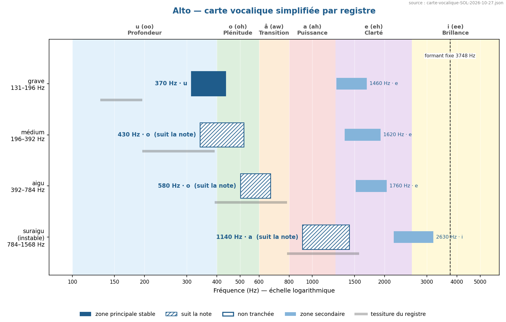
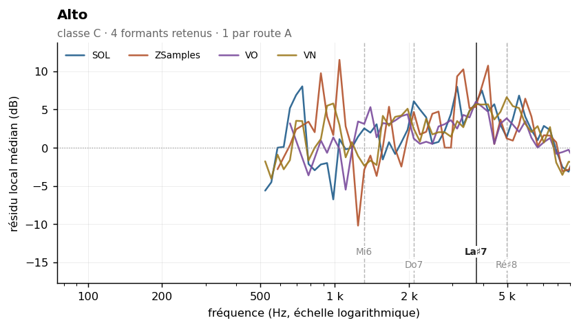

Viola
Sommaire › Les cordes
| Classe | Provenance | Échantillons | Tessiture | Formants établis |
|---|---|---|---|---|
| C | IRCAM | 309 | C3–C7 | 1 |
| Formant | Note | Corpus | Localisation |
|---|---|---|---|
| 3748 Hz | La♯7 | VO ZSamples |


Statut des formants — révision du 26/10/2026
Confrontation des cinq corpus. Provenance de ce corpus : IRCAM (FullSOL2020).
Formant Statut 1318 Hz présent dans le seul corpus SOL 2091 Hz présent dans le seul corpus SOL 3517 Hz indéterminé — concordance à un demi-ton avec ZSamples mais aucun couple au même point de grille. Environ une concordance sur quatre à ce seuil est fortuite. 4974 Hz présent dans le seul corpus SOL
etendue_residudans l'en-tête n'est pas une largeur de bande : c'est l'étendue du résidu de la méthode 8, souvent une butée de plage. Les largeurs mesurées sont dans_LARGEURS-DE-BANDE.md.
L'alto a été présenté le 25/10 comme le seul membre du quatuor sans formant établi. C'était une erreur de comptage, corrigée ici.
| Corpus | Formants retenus |
|---|---|
| SOL | 1 318 · 2 091 · 3 517 · 4 974 Hz |
| ZSamples | 2 348 · 3 726 · 5 583 Hz |
| VO | 3 770 · 5 331 Hz |
| VN | 1 759 · 4 432 Hz |
VO et ZSamples s'accordent à 0,20 demi-ton — 3 770 contre 3 726 Hz. Deux provenances distinctes, même point de grille : c'est une route A, à 3 748 Hz (La♯7).
Mais SOL ne le retrouve pas. Sa valeur la plus proche, 3 517 Hz, est à 1,1 demi-ton du couple, au-delà du seuil. D'où le statut « indéterminé » qui figure en tête pour cette valeur : le formant de l'alto est établi, mais ce n'est pas celui que mesure ce corpus-ci.
La zone 5 331 / 5 583 Hz reste à un demi-ton, sans couple strict.
L'alto reste le membre du quatuor le moins bien établi — un formant, contre deux au violon et trois au violoncelle, et aucun que SOL confirme. Son ρ est élevé et stable partout, de 0,74 à 0,87 sur quatre corpus.
Et c'est pour lui que la méthode 12 l'emporte sur la méthode 8 : elle retrouve au grave une F1 entre 374 et 395 Hz sur quatre corpus — 0,9 demi-ton d'écart, pente +0,01 — compatible avec le mode B1+ de la caisse, que la littérature situe vers 350–450 Hz, et que le redressement à ±3/4 d'octave de la méthode 8 efface parce qu'il est trop large.
Au médium, en revanche, F1 suit la note : pentes de +0,79 à +1,11 sur les quatre corpus.
L'affirmation publiée le 24/10, qui couvrait « le grave et le médium », a été corrigée de
moitié le 27/10. Voir ../_RESONANCE-DE-CAISSE.md et ../_CARTE-VOCALIQUE.md.
Méthode 8 — quatre formants retenus. Voir
00-METHODE.md, section « Typologie — trois classes ».
L'alto est l'illustration la plus nette de la classe C. Son ρ atteint 0,87, aussi élevé que celui de la clarinette basse, et son enveloppe vraie est très dispersée (538 Hz, σ = 970 Hz). Pourtant les quatre candidats détectés passent tous les deux tests de rejet, sans aucun rejet ni cas fragile — performance que seuls le trombone ténor et le tuba basse égalent dans tout le corpus.
Conditions de mesure favorables : 309 échantillons, le deuxième corpus le plus fourni, et une pente d'une régularité exceptionnelle, σ = 1,8 dB/octave.
| Zone | Résidu | Largeur −3 dB | Notes distinctes | Verdict |
|---|---|---|---|---|
| 1 318 Hz | +1,8 dB | large | 8 | retenu (faible) |
| 2 091 Hz | +3,6 dB | large | 15 | retenu |
| 3 517 Hz | +5,8 dB | 2 792–5 915 Hz | 24 | retenu |
| 4 974 Hz | +4,1 dB | large | 30 | retenu |
| Zone | k = 2–3 | k = 4–7 | k = 8–15 | k ≥ 16 | Robustesse |
|---|---|---|---|---|---|
| 1 318 Hz | +1,5 | +2,1 | +4,7 | — | oui |
| 2 091 Hz | +3,5 | +4,4 | +6,1 | — | oui |
| 3 517 Hz | +2,2 | +4,6 | +5,1 | +5,1 | oui |
| 4 974 Hz | +3,6 | +2,1 | +1,9 | +1,8 | oui |
Les quatre formants sont stables, sans changement de signe. Le plus fort, à 3 517 Hz, voit son résidu croître avec le rang harmonique puis se stabiliser à +5,1 dB, ce qui est le comportement attendu d'une résonance de caisse éclairée par des harmoniques de plus en plus serrés.
| Descripteur | Valeur | Lecture |
|---|---|---|
| Pente spectrale médiane | −15,6 dB/octave (σ 1,8) | la deuxième plus régulière du corpus |
| Harmoniques par note | 22 [5–83] | correct |
| Balance impair − pair | −3,6 dB | corde frottée |
| Enveloppe vraie (méthode 6) | 538 Hz, σ 970 | inexploitable note par note |
| Source | Valeur annoncée | Notre mesure | Lecture |
|---|---|---|---|
| Backus, Giesler, Meyer | pas de valeur propre à l'alto dans les tableaux de l'étude | — | à chercher aux sources primaires |
Ancien pipeline specenv |
F1 = 377 Hz, zone /o/ | — | hauteur médiane (rapport 0,91) |
| Ancien Fp | — (non publié séparément) | — | — |
| Cepstre mai 2026 (ordre 80) | 409 Hz, σ 1 191 | — | σ supérieur à la valeur : inexploitable |
Aucune source classique ne donne de valeur spécifique à l'alto dans les tableaux de l'étude
antérieure, qui le plaçait dans la zone /o/ à 377 Hz sur la seule base du pipeline specenv.
Les quatre formants mesurés ici sont donc entièrement inédits.
Point d'attention relevé dans les données de mai 2026 : le cepstre d'ordre 80 donnait 409 Hz pour l'alto soliste mais 393 Hz pour l'ensemble d'altos avec un σ de 25 Hz seulement, contre σ = 1 191 Hz pour le soliste. Cet écart de dispersion d'un facteur 48 entre soliste et pupitre est une anomalie qui mérite examen : il suggère que les légers désaccords d'un pupitre « remplissent » l'espace entre harmoniques et révèlent mieux le corps de résonance. Les ensembles seraient alors de meilleurs témoins formantiques que les solistes. À tester, et c'est une piste méthodologique potentiellement importante.
Data/registres.md : grave C3–G3 · médium G3–G4 · aigu G4–G5 · suraigu G5 et au-dessus.
Mesure par registre : non effectuée.
Rang du formant dans son propre spectre : 50 % signifie que les deux méthodes ne s'accordent pas mieux là qu'ailleurs. Voir ../_APPARIEMENT-LPC.md.
| Formant | Statut | Rang |
|---|---|---|
| 1318 Hz | 1 corpus | 75,0 % |
| 2091 Hz | 1 corpus | 75,0 % |
| 3748 Hz | route A | 15,0 % |
| 4974 Hz | 1 corpus | 25,0 % |
Part de pics non localisables — l'enveloppe n'y redescend pas de 3 dB des deux côtés, donc le formant n'a pas de largeur mesurable. Voir ../_LARGEUR-PAR-REGISTRE.md.
| doux | moyen | fort | |
|---|---|---|---|
| tous registres | 12 % | 12 % | 7 % |
| grave | 12 % | 18 % | 11 % |
| médium | 14 % | 15 % | 8 % |
| aigu | 10 % | 5 % | 5 % |
| suraigu | 4 % | 10 % | 3 % |
Effet doux → fort : +5 points. Effet négligeable.
Non. F1 0,0 % contre 0,0 % au témoin · F2 4,9 % contre 15,1 % au témoin — soit le hasard, ou moins. Les deux méthodes ne mesurent pas la même région du spectre : F1 se situe en médiane à 15,5 demi-tons du formant établi le plus proche, parce que la méthode 8 ne mesure rien sous 3,2 à 5,7 fois f0_min.
Témoin : les propres formants de l'instrument transposés de ±2 à ±6 demi-tons, ce qui conserve leur nombre et leur espacement. Voir ../_COINCIDENCES-F2.md.
21 paires calculées. Fusion moyenne : 22 %. Voir ../_MELANGES.md.
| Couleur nouvelle avec | Se fond avec | ||
|---|---|---|---|
| Trombone basse | 46 % | Petite flûte | 55 % |
| Cor anglais | 40 % | Flûte | 54 % |
| Trompette en Ut | 35 % | Contrebasson | 48 % |
À compléter. Éléments acquis :
Aucun à ce stade. Figures prévues dans ../Versions-html-and-docx/media/ :
| Fichier prévu | Contenu |
|---|---|
alto_composite.png |
enveloppe composite — quatre formants retenus, bonne figure de classe C |
alto_soliste_vs_ensemble.png |
piste méthodologique : dispersion soliste (σ 1 191) contre pupitre (σ 25) |
cordes_composite.png |
figure de famille : les quatre cordes solistes superposées |
La deuxième figure concerne une hypothèse qui pourrait changer la méthode : si les pupitres sont de meilleurs témoins que les solistes, il faudra privilégier les ensembles.